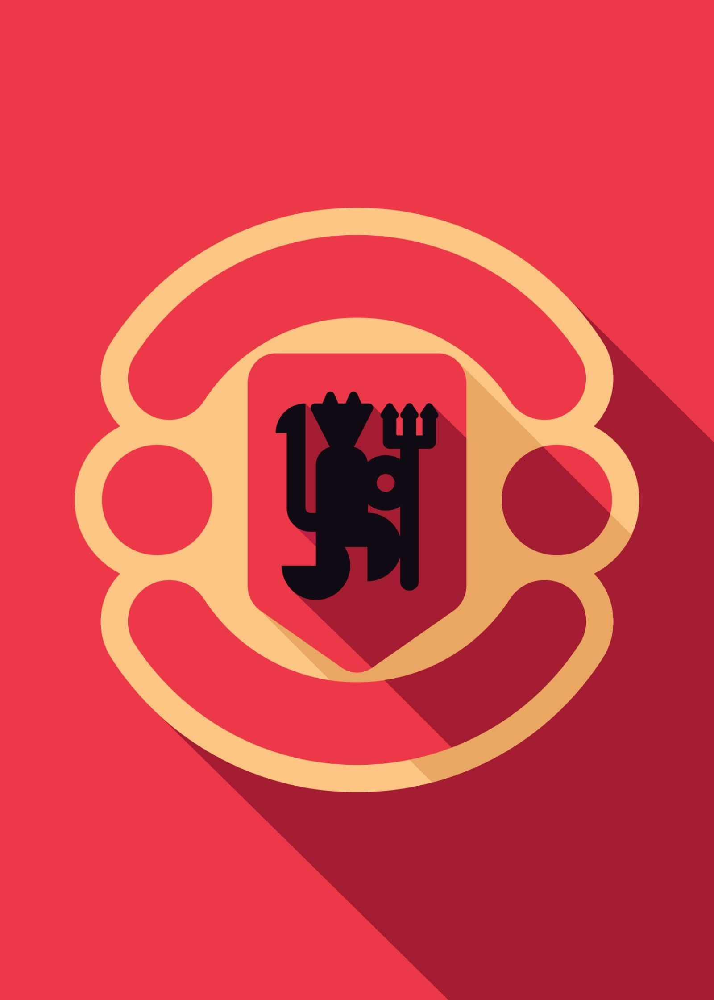
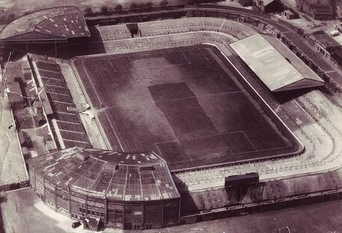

Manchester United Fan Site

Welcome to the Offical(not)site for Manchester United.
Here you're going learn all about the Red Devils from their
beiginings to all the way to the 21st century. This site
contains all the information you need on the red devils;
their current team and how their doing.
History of Manchester United
Manchester United is a futbol club that plays in the Premier League; an competitive football with many
other clubs fighting for the premier league title each year. United had begun as early as the late 19th century.
Its predicessor.In 1878 the Newton Heath L&YR Football Club was established but during its 1892-1893 they changed
its named to Manchester United in 1902 and went on to win the FA and division one champions and moved to Old Trafford
in 1910 their iconic stadium to the day. After that futbol had went on a break due the Great War; they had started
out strong but began a yo-yo club; a club that bounces back between leagues at the top of the division below and
being regulated once again. This all changed in 1986 when a new manager by the name of Sir Alex Ferguson was
appointed as manager; he had basically made the club an extreme threat and is know as one of the greatest coaches
of all time and resigned in 2013.
